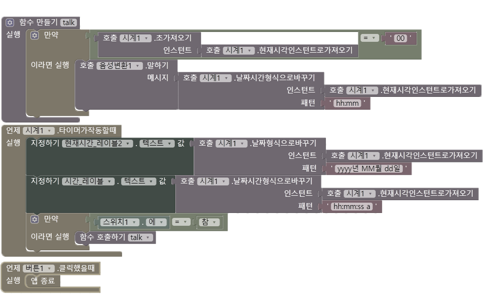

말하는 시계 안드로이드 앱
항상 바쁜 출근준비시간, 등교준비시간
1분1초가 아까웠던 적이 있으신가요?
항상 급하게 준비해 준비하는 중간중간 시계보는 시간 조차 아까웠던 저는 시계를 보여주고 1분 마다 읽어주는 간단한 로직으로 앱을 만들어 볼 수 도 있겠다. 생각했고, 당시 코딩에 대한 지식이 전무했던 저는 블록코딩 형식의 앱인벤터를 활용해 내제되어 있는 음성출력 기능을 이용, 손쉽게 생각한 서비스를 구현할 수 있었습니다. 이는 생활 속 불편함을 코딩을 통해 해결한 첫 사례 이기도 합니다.
logic

Demonstrate video